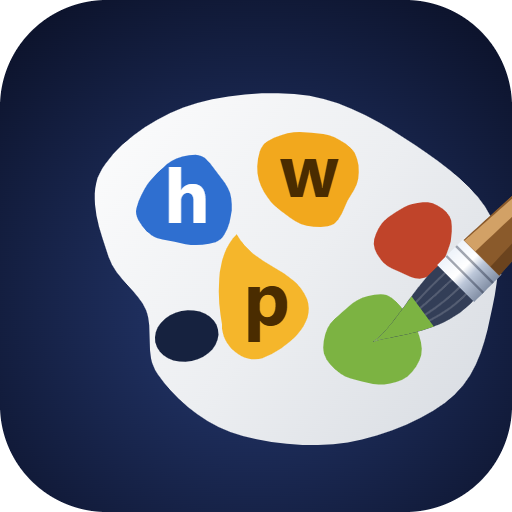
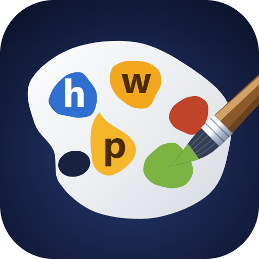

팔레트가 오른쪽으로 밀려 있던 건 엄지 쪽을 파면서 왼쪽 살이 빠져 무게중심이 이동한 탓입니다. 중심점 좌표는 그대로였지만 모양이 비대칭이 됐죠. 실제 경계를 재서 팔레트·물감·구멍·붓을 통째로 옮겼습니다.
팔레트가 오른쪽 벽에 거의 붙어 있고 왼쪽이 휑합니다.

좌우 여백이 같아졌습니다. 구도는 그대로 두고 위치만 옮겼습니다.

| 왼쪽 여백 | 오른쪽 여백 | 실제 중심 | |
|---|---|---|---|
| 이전 | 17.8 | 2.7 | x 55.5 |
| 지금 | 10.3 | 10.2 | x 48.0 |
아직 사이트엔 안 넣었습니다. hwp 카드는 여전히 예전 아이콘(파란 원 3개)입니다. 이대로 확정이면 SVG 로 굽고 카드에 반영하겠습니다.